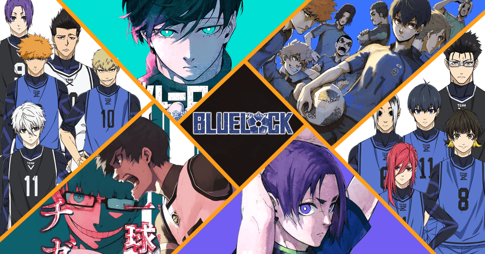
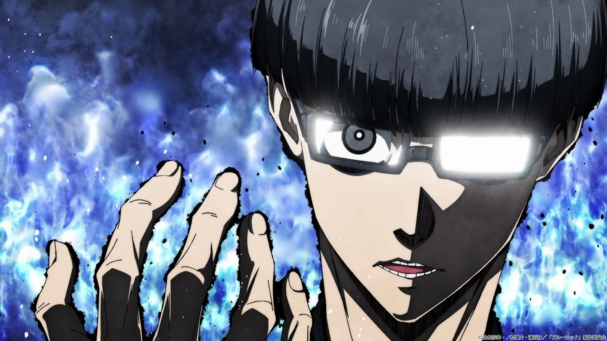

Bienvenido al mundo de Blue Lock
Blue Lock es una serie de anime y manga centrada en la búsqueda del mejor delantero de Japón. Aquí conocerás a sus jugadores, sus habilidades y momentos épicos.
¿De qué trata Blue Lock?
Blue Lock es un experimento extremo de la Federación Japonesa de Fútbol que busca crear al mejor delantero del mundo para ganar la Copa Mundial.
El responsable de este proyecto es Ego Jinpachi, un estratega visionario y provocador que cree que solo un jugador egoísta y hambriento de goles puede llevar a Japón al éxito mundial.
A lo largo de la historia, los jugadores se enfrentan no solo entre sí, sino también a sus límites mentales y emocionales en un camino de evolución, sacrificio y gloria.
